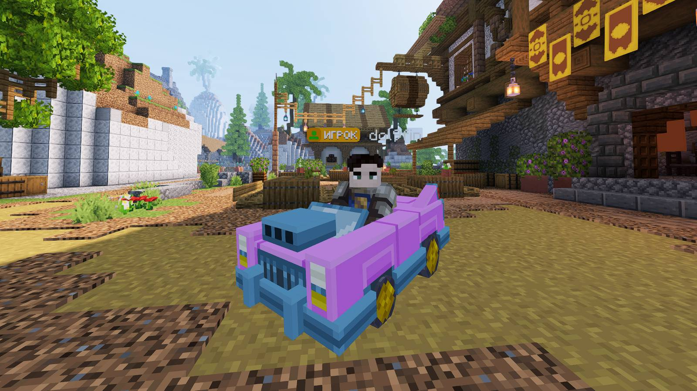

Гайды / Мир
Публичные события
Каждые 20–30 минут начинается событие: защищай, собирай, готовь и сражайся вместе со всем сервером.

Как попасть на событие
- В чате появляется анонс с названием и описанием — с горном и полосой вверху экрана.
- Нажми на сообщение — тебя перенесёт к месту события. Есть 3 минуты на сбор.
- Чтобы получить награду, нужно провести в зоне события хотя бы минуту.
- Чем больше игроков — тем сильнее враги, но и награда честная для всех.
Правила на событии
- Вещи не теряются при смерти.
- Возрождаешься рядом с событием.
- С мобов события ничего не падает — награда выдаётся в конце.
- События проходят, когда на сервере есть хотя бы один игрок.
Самогонный слёт
Ведущий: Ваас. Сложность: средняя. Время: 16 минут.
Гоблины пронюхали про слёт самогонщиков и идут за дистилляторами.
- Защищай три дистиллятора — гоблины лезут прямо к ним.
- Ударь гоблина — он переключится на тебя.
- Из гоблинов выпадают бутыли — сдавай их Ваасу через диалог.
- 30 бутылей — победа, 60 — щедрая награда.
- На четвёртой волне приходит Король гоблинов.
Пир Короля
Ведущая: Эльза. Сложность: лёгкая. Время: 15 минут.
В таверну едет сам король, а Эльза в панике.
- Поговори с Эльзой — она даст меню из пяти блюд. Наведи на блюдо в чате, чтобы увидеть состав.
- Вокруг таверны появятся 10 светящихся сундуков с продуктами.
- Готовь блюда на кухне и подавай Эльзе.
- Эльфы будут мешать — держитесь вместе.
- Пять блюд — идеальная награда.
Редстоуновая лихорадка
Ведущий: Арнольд. Сложность: средняя. Время: 13 минут.
В шахте пошла редстоуновая жила, и проснулись её стражи.
- В углах шахты растёт редстоун-руда — добывай её.
- Сдавай пыль Арнольду. Нужно 100.
- Четыре алхимика работают в шахте — пауки и скелеты идут прямо к ним. Не дай им погибнуть.
- После 100 пыли — минута переплавки и последний натиск.
- Чем больше алхимиков выживет — тем больше нептуния в награду.
Жизнь на кон
Ведущий: Малакар. Сложность: высокая. Время: 18 минут.
Безумный маг открывает цирк, ставка — жизнь.
- Участники по очереди бьют по колесу фортуны.
- Красное — один-два босса, синее — орда одного вида, жёлтое — испытание на 30 секунд.
- Погиб — выбыл, но вещи остаются при тебе.
- Переживи пять раундов — получишь оружие из цирковой коллекции.
Проклятье Дейви Джонса
Ведущий: Дейви Джонс. Сложность: средняя. Время: 16 минут.
Морские твари окружили «Летучий Голландец», из глубин поднимается кракен.
- Дейви Джонс выдаст мушкет и 20 пуль на время боя.
- Твари подплывают к бортам и грызут корабль — отстреливай их.
- После трёх волн всплывает кракен. Убей его — это победа.
- Если корабль утонет — награды не будет.
Марш нечисти
Ведущий: жрец Россиу Адай. Сложность: высокая. Время: 15 минут.
Жрец запечатывает портал в Незер, а нечисть лезет наружу.
- Жрец читает ритуал — нечисть идёт волнами прямо к нему.
- Ударь врага — он отвлечётся на тебя.
- Между волнами жрец понемногу восстанавливается.
- В последней волне из портала выходит Король ифритов.
Команды
/ивенты | расписание и текущее событие |